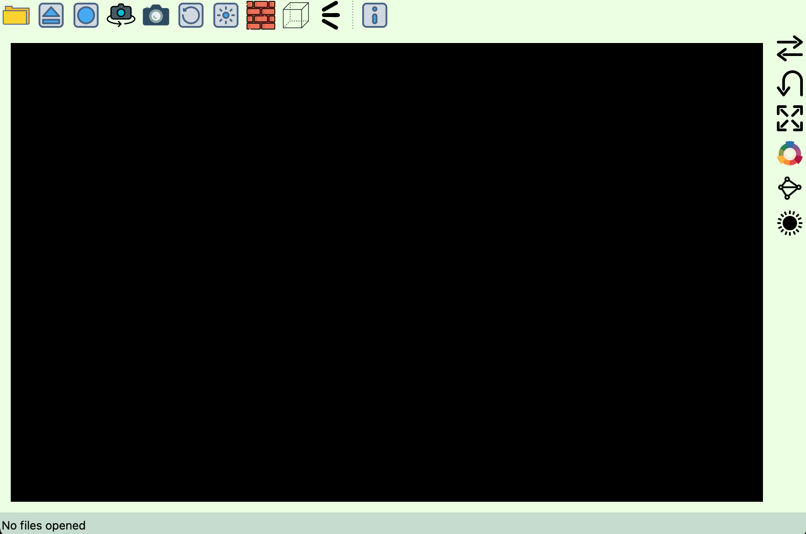
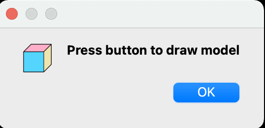
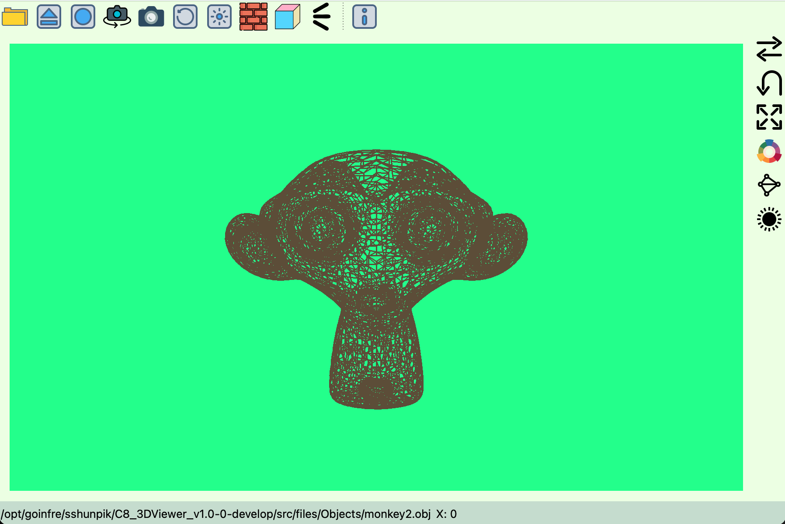
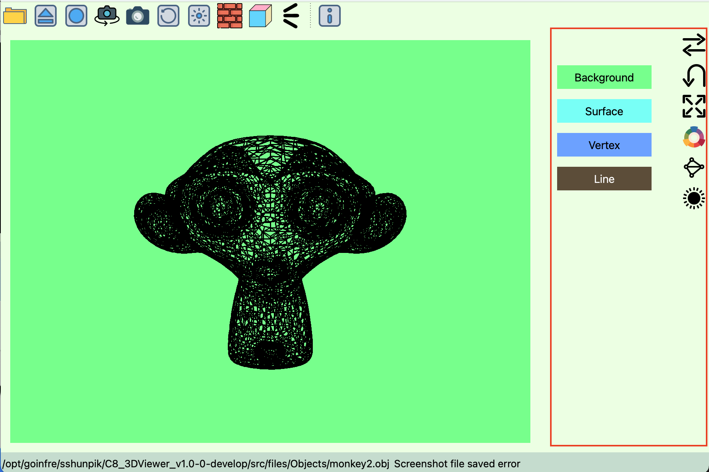

This is the 3DViewer documentation. Project witten by Jmadie (Alexander Potyanikhin), Wsulu (Nikita Romanoff) and Sshunpik (Svytoslav Gusev).
This version implemented using C++17, Qt 6.2.3
If you want to learn more about technical features CLICK HERE


To open .obj file use Folder button
After choosing you will see the message
Wait until model is loaded from disk to RAM. It is important for big models (more than 1M vertices)
The model is opened!
Now you can use right toolbar to change view of the model (move it, rotate, change background color etc.)
(c) Jmadie Wsulu Sshunpik